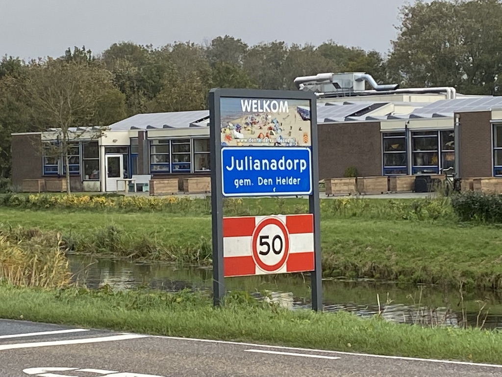
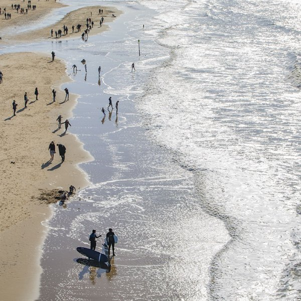

Pieter Loopuyt, kleinzoon van de eerste particuliere eigenaar van de Koegrasgronden sinds 1849,
heeft op 20 october 1909 bij Hare Majesteit Koningin Wilhelmina het verzoek ingediend om het buurtschap of dorp dat in het centrum van den polder "Het Koegras" werd gesticht de naam "Julianadorp" te mogen geven.
Het argument voor de naamgeving was, dat 1909 ook het geboortejaar is van prinses Juliana.
Het verzoek werd gehonoreerd.
Op 8 november 1909 schreef Pieter Loopuyt dat hij van Hare Majesteit de Koningin op het verzoek tot de naamgeving tot grote vreugde de hiernaast te lezen reaktie mocht ontvangen.
De datum van de echte naamgeving is gesteld op 8 october 1909, dat was tevens de dag van de eerste steenlegging van de NH-kerk, de Julianakerk.
Gedenkwaardig is de slot-alinea in deze brief van P. Loopuyt;
"Overtuiged dat bewoners en belanghebbenden zullen medewerken dat het nieuwe dorp zich den Koninklijke naam waardig zal toonen".
Koninklijk Bezoek in 1919.
In 1919, op 30 mei, hebben H.M. Koningin Wilhelmina en Prins Hendrik met dochter Prinses Juliana een bezoek gebracht aan Julianadorp.
De koningin toonde daarbij zeer veel belangstelling voor het glas-in-lood gedenkraam dat is aangebracht in de Julianakerk.
Welkom Julianadorp

Na het bordje welkom te hebben gepasseerd, komt u in het gezellige dorp.
Het hele jaar door een vakantie paradijs voor onze Oosterburen.
Sport, spel en ontspanning voor jong en oud.Sport, spel en ontspanning voor jong en oud.
Strand, Zee en Duinen

Voor een heerlijke wandeling of een fietstocht kunt u genieten van de duinen, strand en zee .
In het voorjaar een prachtige uitzicht over de bloeiende bollenvelden.